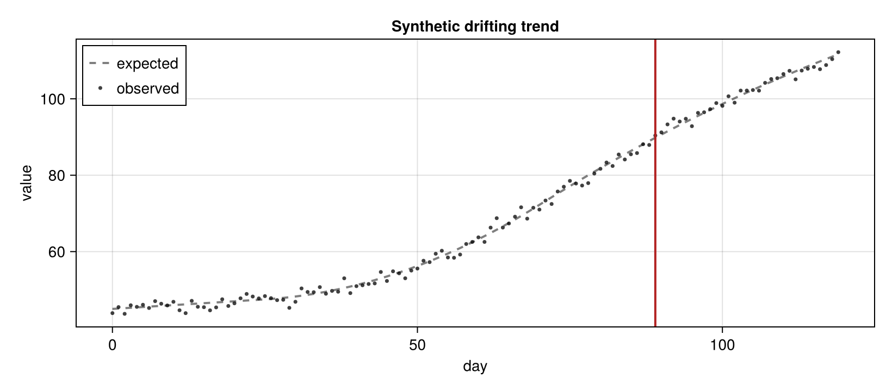
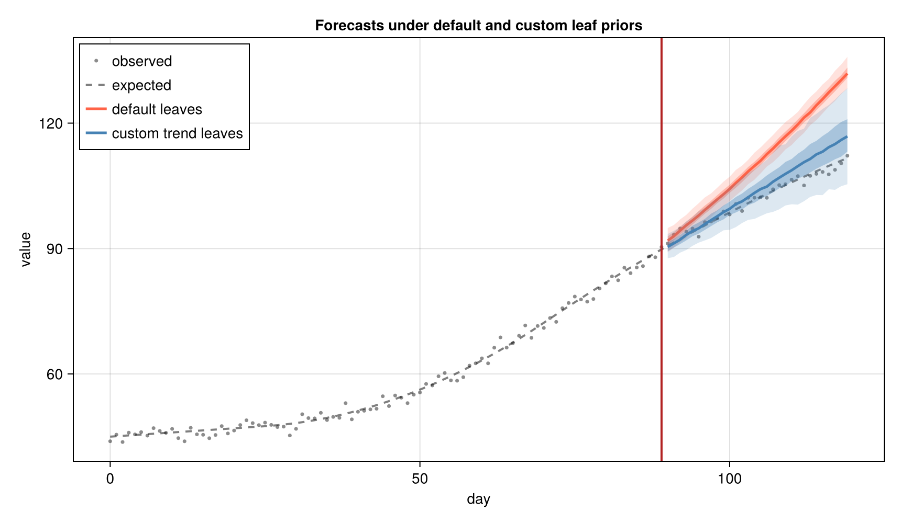

using MarkdownCustom AutoGP leaf kernels
Using RandomWalk and IntegratedBrownianMotion in GPConfig
CDC Center for Forecasting and Outbreak Analytics (CFA/CDC)
NowcastAutoGP includes two additional primitive kernels that can be used as AutoGP leaf nodes:
RandomWalk, a Brownian-motion covariance for drifting levels.IntegratedBrownianMotion, an integrated Brownian-motion covariance for drifting slopes.
These kernels are non-stationary, which extends the set of non-stationary kernels available in AutoGP. Note that non-stationary kernels of time-varying processes have their covariance depend on distance from the start of the time axis, not just on pairwise distances. AutoGP rescales the training dates to [0, 1] before fitting, so both kernels are anchored at normalised time zero and sample only their variance amplitude.
This means the initial level is not supplied by the random-walk kernel itself. Use Constant + RandomWalk when the initial level should be uncertain, and Constant + Linear + IntegratedBrownianMotion when both the initial level and initial slope should be uncertain.
In this vignette we show how to register these kernels in GPConfig, fit a small synthetic trend example, and compare the forecast to the default AutoGP leaf-kernel prior.
Loading dependencies
import NowcastAutoGP.AutoGP as AGP
using NowcastAutoGP
using CairoMakie
using Dates, Random
using Logging
using Statistics
Random.seed!(2026)
AGP.seed!(2026)
CairoMakie.activate!(type = "png")Inspecting the default leaf prior
GPConfig stores a mapping from integer node codes to kernel node types, plus probability vectors over those codes. In the default config, the five primitive leaf kernels have codes 1:5, while Plus, Times, and ChangePoint are operators after the leaves:
default_config = GPConfig(changepoints = false, max_depth = 3)
default_config.index_to_nodeDict{Integer, Type{<:AutoGP.GP.Node}} with 8 entries:
5 => Periodic
4 => GammaExponential
6 => Plus
7 => Times
2 => Linear
8 => ChangePoint
3 => SquaredExponential
1 => ConstantThe corresponding leaf probability vector has length five:
default_config.node_dist_leaf5-element Vector{Float64}:
0.0
0.3333333333333333
0.0
0.3333333333333333
0.3333333333333333The forked AutoGP used by this package treats any registered subtype of AutoGP.GP.LeafNode as a leaf. To add RandomWalk and IntegratedBrownianMotion, we extend index_to_node, lengthen the probability vectors, and move Plus, Times, and ChangePoint to later codes.
normalize_prob(v) = v ./ sum(v)
function trend_leaf_config(; changepoints = false, max_depth = 3)
return GPConfig(
index_to_node = Dict{Integer, Type{<:AGP.GP.Node}}(
1 => AGP.GP.Constant,
2 => AGP.GP.Linear,
3 => AGP.GP.SquaredExponential,
4 => AGP.GP.GammaExponential,
5 => AGP.GP.Periodic,
6 => RandomWalk,
7 => IntegratedBrownianMotion,
8 => AGP.GP.Plus,
9 => AGP.GP.Times,
10 => AGP.GP.ChangePoint,
),
Plus = 8,
Times = 9,
ChangePoint = 10,
node_dist_leaf = normalize_prob([1.0, 1, 0, 0, 0, 2, 2]),
node_dist_nocp = normalize_prob([1.0, 1, 0, 0, 0, 4, 4, 3, 0.5]),
node_dist_cp = normalize_prob([1.0, 1, 0, 0, 0, 4, 4, 3, 0.5, 0.5]),
changepoints = changepoints,
max_depth = max_depth,
)
end
trend_config = trend_leaf_config()
trend_config.node_dist_leaf7-element Vector{Float64}:
0.16666666666666666
0.16666666666666666
0.0
0.0
0.0
0.3333333333333333
0.3333333333333333The first five entries still correspond to the built-in leaf codes. Entries six and seven put prior mass on RandomWalk and IntegratedBrownianMotion.
Synthetic trend data
We will make a single forecast from a report date after 90 days of data and score a 30-day horizon. The data are generated from a smooth trend whose slope changes over time, which is the kind of pattern that the integrated Brownian motion kernel is designed to express.
start_date = Date(2025, 1, 1)
n_train = 90
horizon = 30
n_all = n_train + horizon
all_dates = collect(start_date:Day(1):(start_date + Day(n_all - 1)))
tt = collect(0:(n_all - 1))
smooth_ramp(x) = x <= 0 ? 0.0 : x^2
truth = [
45.0 + 0.1 * t + 0.01 * smooth_ramp(t - 25) - 0.014 * smooth_ramp(t - 70)
for t in tt
]
observations = truth .+ 1.2 .* randn(n_all)
train_dates = all_dates[1:n_train]
train_values = observations[1:n_train]
forecast_dates = all_dates[(n_train + 1):end]
forecast_truth = observations[(n_train + 1):end]
fig_data = let
fig = Figure(size = (820, 360))
ax = Axis(
fig[1, 1];
xlabel = "day",
ylabel = "value",
title = "Synthetic drifting trend",
)
x = Dates.value.(all_dates .- first(all_dates))
lines!(ax, x, truth; color = (:black, 0.5), linestyle = :dash, linewidth = 2, label = "expected")
scatter!(ax, x, observations; color = (:black, 0.75), markersize = 5, label = "observed")
vlines!(ax, Dates.value(all_dates[n_train] - first(all_dates)); color = :firebrick, linewidth = 2)
axislegend(ax; position = :lt)
fig
end
Fitting default and custom leaf priors
The two models below differ only in their config. For a compact docs example we turn changepoints off in both configs and use small SMC/HMC settings. In a real analysis, increase n_particles, n_mcmc, and n_hmc.
fit_params = (
n_particles = 8,
smc_data_proportion = 0.05,
n_mcmc = 60,
n_hmc = 20,
adaptive_rejuvenation = true,
)
n_draws = 600
train_data = create_transformed_data(train_dates, train_values; transformation = identity)
default_model, trend_model = with_logger(NullLogger()) do
default_model = make_and_fit_model(train_data; config = default_config, fit_params...)
trend_model = make_and_fit_model(train_data; config = trend_config, fit_params...)
return default_model, trend_model
end
default_forecast = forecast(default_model, forecast_dates, n_draws)
trend_forecast = forecast(trend_model, forecast_dates, n_draws)The sampled kernels from the custom model use the extended config. Inspecting them in the transformed fitting space is often the easiest way to confirm that the new leaf types are participating:
AGP.GP.pretty.(AGP.covariance_kernels(trend_model; reparameterize = false))8-element Vector{String}:
"((IBM(0.32) + IBM(0.27)) + (CONST(0.19) * CONST(0.19)))"
"(IBM(0.66) + CONST(0.15))"
"(IBM(0.60) + (CONST(0.12) + CONST(0.08)))"
"(IBM(0.32) + (CONST(0.12) + IBM(0.37)))"
"(LIN(0.44; 0.10, 0.13) + (LIN(0.95; 0.10, 0.35) + IBM(0.41)))"
"((IBM(0.47) + LIN(0.27; 0.68, 0.08)) + IBM(0.28))"
"(LIN(0.06; 0.20, 1.35) + IBM(0.69))"
"(IBM(0.58) + LIN(0.13; 0.81, 0.13))"Forecast comparison
function forecast_summary(fc)
return (;
lower_025 = [quantile(row, 0.025) for row in eachrow(fc)],
lower_25 = [quantile(row, 0.25) for row in eachrow(fc)],
median = [quantile(row, 0.5) for row in eachrow(fc)],
upper_75 = [quantile(row, 0.75) for row in eachrow(fc)],
upper_975 = [quantile(row, 0.975) for row in eachrow(fc)],
)
end
fig_forecasts = let
fig = Figure(size = (860, 500))
ax = Axis(
fig[1, 1];
xlabel = "day",
ylabel = "value",
title = "Forecasts under default and custom leaf priors",
)
x_all = Dates.value.(all_dates .- first(all_dates))
x_fc = Dates.value.(forecast_dates .- first(all_dates))
scatter!(ax, x_all, observations; color = (:black, 0.45), markersize = 5, label = "observed")
lines!(ax, x_all, truth; color = (:black, 0.5), linestyle = :dash, linewidth = 2, label = "expected")
for (fc, color, label) in (
(default_forecast, :tomato, "default leaves"),
(trend_forecast, :steelblue, "custom trend leaves"),
)
s = forecast_summary(fc)
band!(ax, x_fc, s.lower_025, s.upper_975; color = (color, 0.18))
band!(ax, x_fc, s.lower_25, s.upper_75; color = (color, 0.35))
lines!(ax, x_fc, s.median; color = color, linewidth = 2.5, label = label)
end
vlines!(ax, Dates.value(all_dates[n_train] - first(all_dates)); color = :firebrick, linewidth = 2)
axislegend(ax; position = :lt)
fig
end
Scoring with CRPS
As in the other vignettes, we score forecasts with the Continuous Ranked Probability Score (CRPS), where lower is better:
\[\text{CRPS}(X, y) = \mathbb{E}[|X - y|] - \frac{1}{2}\mathbb{E}[|X_1 - X_2|].\]
function crps(y::Real, X::Vector{<:Real})
term1 = mean(abs.(X .- y))
pairwise_diffs = [abs(X[i] - X[j]) for i in eachindex(X) for j in (i + 1):lastindex(X)]
term2 = mean(pairwise_diffs)
return term1 - 0.5 * term2
end
mean_crps(truth, fc) = mean(crps(y, collect(X)) for (y, X) in zip(truth, eachrow(fc)))
scores = (;
default = mean_crps(forecast_truth, default_forecast),
custom_trend_leaves = mean_crps(forecast_truth, trend_forecast),
)(default = 8.44995410061826, custom_trend_leaves = 1.6006683695774713)The absolute numbers will vary with the random seed and fitting settings, but this comparison shows the workflow: register the new leaf types, fit with the extended config, and evaluate the resulting predictive distribution.
Summary
RandomWalkandIntegratedBrownianMotionare anchored at normalised time zero and sample onlyamplitude.- Register custom leaves by extending
GPConfig.index_to_nodeand lengthening the node probability vectors. - Use
Constant + RandomWalkfor uncertain initial levels. - Use
Constant + Linear + IntegratedBrownianMotionfor uncertain initial levels, slopes, and smoothly drifting slopes.
This page was generated using Literate.jl.